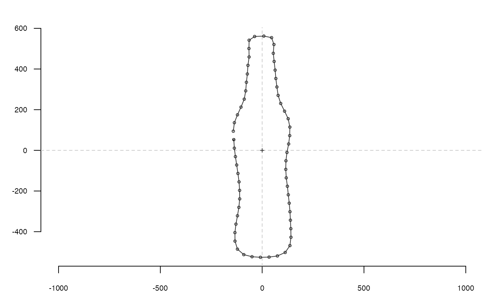
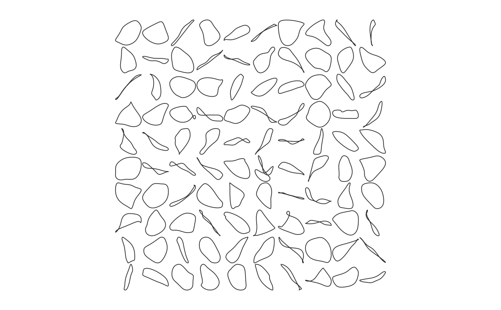

efourier_shape calculates a 'Fourier elliptical shape' given Fourier
coefficients (see Details) or can generate some 'efourier' shapes.
Mainly intended to generate shapes and/or to understand how efourier works.
efourier_shape(an, bn, cn, dn, nb.h, nb.pts = 60, alpha = 2, plot = TRUE)
Arguments
| an |
|
|---|---|
| bn |
|
| cn |
|
| dn |
|
| nb.h |
|
| nb.pts |
|
| alpha |
|
| plot |
|
Value
A list with components:
xvectorof x-coordinatesyvectorof y-coordinates.
Details
efourier_shape can be used by specifying nb.h and
alpha. The coefficients are then sampled in an uniform distribution
\((-\pi ; \pi)\) and this amplitude is then divided by
\(harmonicrank^alpha\). If alpha is lower than 1, consecutive
coefficients will thus increase. See efourier for the mathematical
background.
References
Claude, J. (2008) Morphometrics with R, Use R! series, Springer 316 pp.
Ferson S, Rohlf FJ, Koehn RK. 1985. Measuring shape variation of two-dimensional outlines. Systematic Biology 34: 59-68.
See also
Other efourier:
efourier_i(),
efourier()
Examples
ef <- efourier(bot[1], 24) efourier_shape(ef$an, ef$bn, ef$cn, ef$dn) # equivalent to efourier_i(ef)#> x y #> [1,] -139.292006 52.55414 #> [2,] -136.616807 10.69211 #> [3,] -131.350271 -30.94211 #> [4,] -125.199336 -72.07640 #> [5,] -118.953152 -113.78248 #> [6,] -113.609682 -155.07182 #> [7,] -110.814096 -196.99594 #> [8,] -110.406802 -238.82588 #> [9,] -114.448576 -280.46843 #> [10,] -121.291958 -321.87890 #> [11,] -128.793705 -362.93618 #> [12,] -133.799480 -404.68963 #> [13,] -133.459946 -446.39242 #> [14,] -121.381226 -485.99486 #> [15,] -90.225043 -512.97786 #> [16,] -49.878625 -523.21089 #> [17,] -8.353210 -526.12066 #> [18,] 33.911396 -525.08469 #> [19,] 74.759609 -519.43972 #> [20,] 113.051448 -502.25491 #> [21,] 136.285584 -468.52283 #> [22,] 141.399365 -427.41134 #> [23,] 140.746409 -385.31652 #> [24,] 138.719031 -343.56495 #> [25,] 136.547192 -301.87577 #> [26,] 132.884166 -259.94004 #> [27,] 128.335128 -218.62173 #> [28,] 123.859620 -176.68909 #> [29,] 118.283114 -135.32263 #> [30,] 115.872309 -93.60856 #> [31,] 116.738256 -51.46991 #> [32,] 121.746650 -10.34707 #> [33,] 130.044438 31.28459 #> [34,] 135.215555 72.30011 #> [35,] 135.968480 114.36171 #> [36,] 127.773756 155.43284 #> [37,] 110.008193 192.61949 #> [38,] 91.059514 230.59227 #> [39,] 78.417823 270.00689 #> [40,] 72.336775 311.64758 #> [41,] 67.126887 353.28501 #> [42,] 63.718346 394.51271 #> [43,] 58.801472 437.18028 #> [44,] 54.675788 477.22927 #> [45,] 57.783825 520.56987 #> [46,] 46.279411 554.26720 #> [47,] 8.173233 561.94185 #> [48,] -37.145543 559.89637 #> [49,] -64.096831 541.62656 #> [50,] -64.927840 500.81669 #> [51,] -64.170645 459.21723 #> [52,] -69.796352 417.94924 #> [53,] -72.732679 375.54798 #> [54,] -77.369097 334.76587 #> [55,] -80.882096 292.41632 #> [56,] -87.983533 251.76743 #> [57,] -103.969321 212.65038 #> [58,] -121.348549 174.68203 #> [59,] -136.478064 135.92288 #> [60,] -141.748300 94.09730efourier_shape() # is autonomous#> x y #> [1,] -1.20612491 -0.2199189049 #> [2,] -0.88560628 -0.4120049402 #> [3,] -0.53032007 -0.5970331058 #> [4,] -0.14430304 -0.7619638376 #> [5,] 0.26506082 -0.8940456619 #> [6,] 0.68720725 -0.9818560629 #> [7,] 1.10891439 -1.0162953960 #> [8,] 1.51514398 -0.9914426245 #> [9,] 1.89012998 -0.9051912666 #> [10,] 2.21861647 -0.7596014446 #> [11,] 2.48712882 -0.5609277752 #> [12,] 2.68515567 -0.3193108794 #> [13,] 2.80612436 -0.0481499360 #> [14,] 2.84807001 0.2367978089 #> [15,] 2.81392485 0.5185199915 #> [16,] 2.71138983 0.7799654340 #> [17,] 2.55238866 1.0052740728 #> [18,] 2.35214459 1.1809190828 #> [19,] 2.12795589 1.2966671691 #> [20,] 1.89777553 1.3462788300 #> [21,] 1.67872037 1.3278931874 #> [22,] 1.48564310 1.2440696282 #> [23,] 1.32989573 1.1014884267 #> [24,] 1.21839695 0.9103419586 #> [25,] 1.15308864 0.6834743636 #> [26,] 1.13083119 0.4353481657 #> [27,] 1.14374770 0.1809295765 #> [28,] 1.17998579 -0.0654111474 #> [29,] 1.22482781 -0.2908921608 #> [30,] 1.26204861 -0.4851257466 #> [31,] 1.27539780 -0.6406773476 #> [32,] 1.25007286 -0.7533426209 #> [33,] 1.17405140 -0.8221344835 #> [34,] 1.03916497 -0.8489993462 #> [35,] 0.84182195 -0.8383062951 #> [36,] 0.58332027 -0.7961725741 #> [37,] 0.26972973 -0.7297015375 #> [38,] -0.08863662 -0.6462141614 #> [39,] -0.47810460 -0.5525519118 #> [40,] -0.88278535 -0.4545177543 #> [41,] -1.28587420 -0.3565046092 #> [42,] -1.67097813 -0.2613384931 #> [43,] -2.02334833 -0.1703392607 #> [44,] -2.33090655 -0.0835778034 #> [45,] -2.58497650 -0.0002872333 #> [46,] -2.78066272 0.0806308185 #> [47,] -2.91685524 0.1600734882 #> [48,] -2.99587592 0.2382485064 #> [49,] -3.02281782 0.3142960147 #> [50,] -3.00465829 0.3860731270 #> [51,] -2.94924789 0.4501354496 #> [52,] -2.86428722 0.5019273053 #> [53,] -2.75640309 0.5361683592 #> [54,] -2.63042233 0.5474012198 #> [55,] -2.48891975 0.5306448353 #> [56,] -2.33208581 0.4820842188 #> [57,] -2.15792524 0.3997197960 #> [58,] -1.96276182 0.2839003441 #> [59,] -1.74199126 0.1376721554 #> [60,] -1.49099696 -0.0331070116